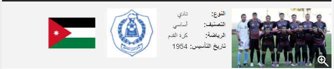
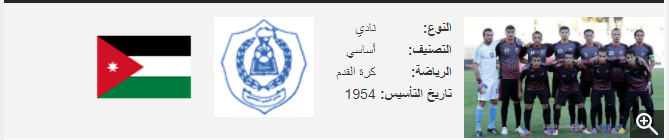

alhuseen youth club is a jordanian club since 1954 in the capital of jordan amman , Al Hussein Youth Club was established in al-Hussein Palestinian refugee camp in Amman, one of the camps established in Amman after the Catastrophe of Palestine and the expulsion of the Palestinian people from their land in 1948, where the club practices sports, cultural, social, scouting and artistic activities. The club belongs to the football and volleyball federations, and has previously belonged to basketball, table tennis, weightlifting and body building federations, and many players have emerged in these games such as Tahsin Technical, Mahmoud Qameya, Ziad Al-Salaima, Issam Azzam, Maher Abu Nema and Mohammed. Rajab in basketball, Saleh Abbasi, Muwaffaq al-Quraini in table tennis, Samir Shapiro and Fawzi Ghiada in body building, but many financial requirements prevented the continuation of this and the sports activity was limited to football and volleyball only, and the club is currently headed by Mr. Sami Al-Qassas The honorary president of the club is Mp Khalil Attia.